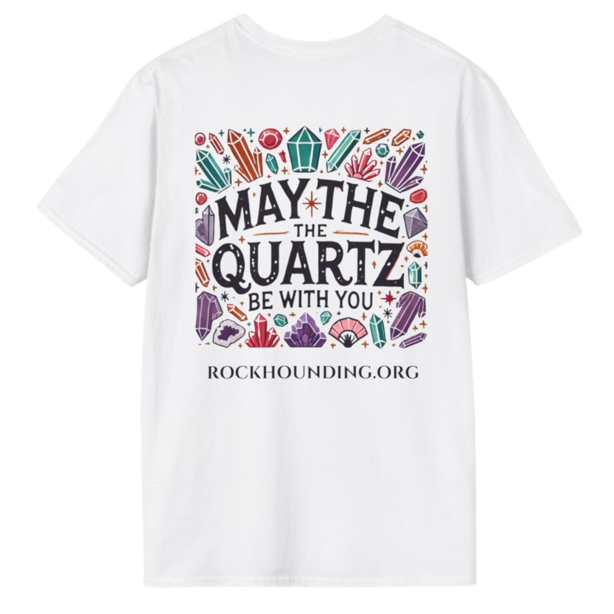
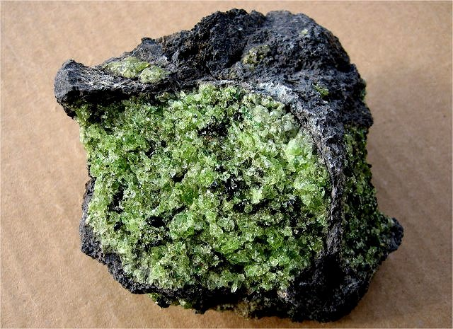
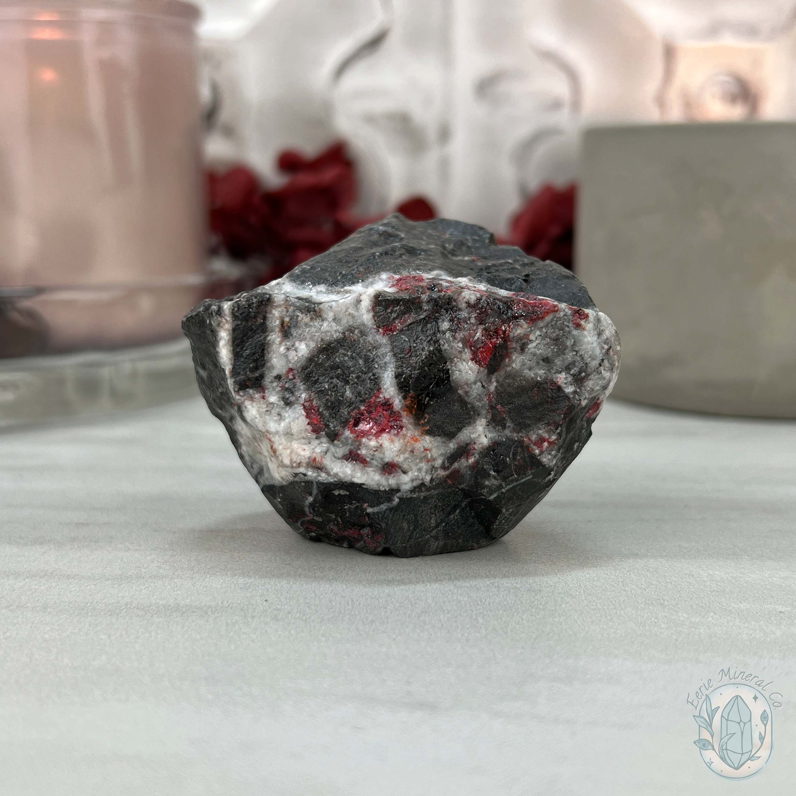
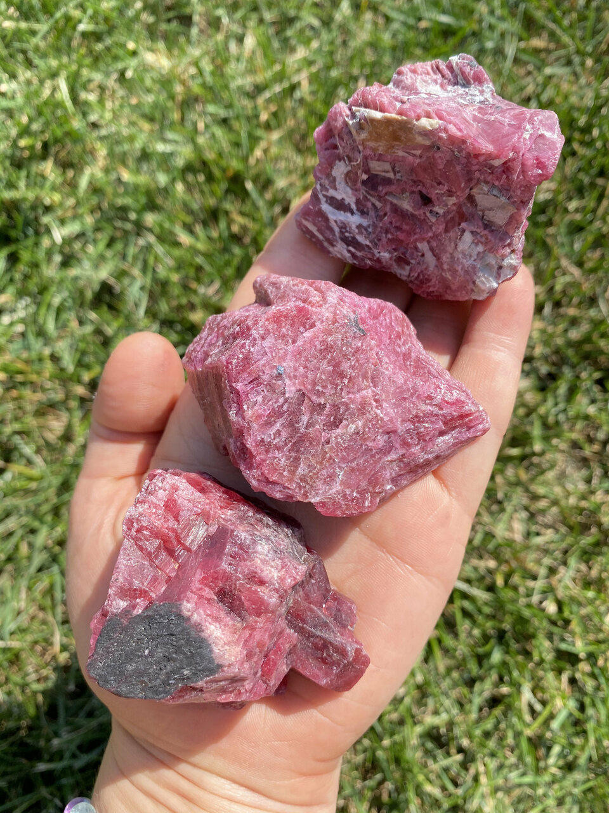

New here?

New to rockhounding and don't know where to start? Not to worry, we will show you the ropes. Click below to head over to our "Getting Started" guide
Getting StartedRocks & Minerals In Alaska


Alaska's vast wilderness provides an abundance of rockhounding prospects, from gold panning in historic mining areas to searching for gemstones and minerals. Notable locations include Crow Creek Gold Mine, Hatcher Pass for garnets, and the Brooks Range for rare minerals.
Shop Our Merch!
We have tons of cool t-shirts, hats, water bottles, and stickers. Show off your love for rockhounding with our high-quality merchandise.
Visit StorePopular Rocks In Alaska
-
 Gold Ore
Gold OreGold can be found in many parts of Alaska, particularly in the Fairbanks, Nome, and Juneau regions.
Read More -
 Red Jasper
Red JasperRed jasper can be found in various locations across Alaska, particularly in gravel deposits and streambeds.
Read More -

Olivine
Olivine can be found in Alaska's Kodiak and Aleutian Islands, as well as the Alaska Range.
Read More -

Cinnabar
Cinnabar, a red mercury ore, can be found in various locations in Alaska, including the Kuskokwim River region.
Read More -
 Aquamarine
AquamarineAquamarine can be found in the Seward Peninsula and the Wrangell-St. Elias National Park and Preserve.
Read More -
 Amber
AmberAmber can be found on the North Slope of Alaska, particularly in the Colville River region.
Read More -
 Magnetite
MagnetiteMagnetite can be found in the Brooks Range and the Alaska Range, especially near igneous intrusions.
Read More -
 Sphalerite
SphaleriteSphalerite is often found in Alaska's mineral deposits, including those in the Wrangell-St. Elias National Park and Preserve and the Talkeetna Mountains.
Read More -
 Amethyst
AmethystAmethyst can be found in geodes and vugs throughout Alaska, with notable occurrences in the Prince of Wales Island and Chichagof Island.
Read More -

Rhodonite
Rhodonite is found in metamorphic rocks in southeastern Alaska, including the Ketchikan Mining District and the Wrangell-St. Elias National Park and Preserve.
Read More -
 Ancient Marine Fossils
Ancient Marine FossilsAncient marine fossils, such as ammonites and trilobites, can be found in limestone deposits in Alaska, particularly in the Brooks Range.
Read More -
 Copper Ore
Copper OreAlaska is home to several copper mines, including the Kennecott Copper Mine in the Wrangell-St. Elias National Park and Preserve and the Pebble Mine in the Bristol Bay region.
Read More
Popular Areas In Alaska
-
 Crow Creek Gold Mine
Crow Creek Gold MineLocated in Girdwood, this historic gold mine offers recreational gold panning and opportunities to find various minerals such as garnet and epidote.
Read More -
Nome Beach
Nome Beach is a popular place for gold prospecting, where visitors can pan or use metal detectors to search for gold nuggets in the black sands.
Read More -
Hatcher Pass
This area in the Talkeetna Mountains is known for its deposits of quartz, tourmaline, garnet, and other minerals, as well as historic gold mining operations.
Read More -
Indian Valley Mine
Located near Anchorage, this historic gold mine offers gold panning, mine tours, and the opportunity to find various minerals such as garnet and quartz.
Read More -
Uyak Bay
Located on Kodiak Island, Uyak Bay is a popular spot for rockhounding, where you can find jasper, agate, and other semi-precious stones along the beaches.
Read More -
Petersville Recreational Mining Area
This public mining area near Denali State Park offers opportunities for gold panning and sluicing, as well as chances to find quartz and other minerals.
Read More
Geology of Alaska
Alaska's vast and complex geology has been shaped over billions of years, with the state's rock formations ranging from ancient Precambrian shields to relatively recent volcanic deposits. Much of Alaska's geology has been influenced by tectonic activity, including the collision of multiple terranes and the ongoing subduction of the Pacific Plate beneath the North American Plate.
As a result of these geological processes, Alaska is rich in mineral and metallic resources, including gold, copper, and zinc. The state is also home to various igneous and metamorphic rocks, as well as large expanses of permafrost-covered terrain.
Glaciation has had a significant impact on Alaska's landscape, carving out fjords, valleys, and other glacial features. The state's diverse geology offers a wealth of rockhounding opportunities, from gold panning in historic mining districts to collecting rare minerals in remote mountain ranges.